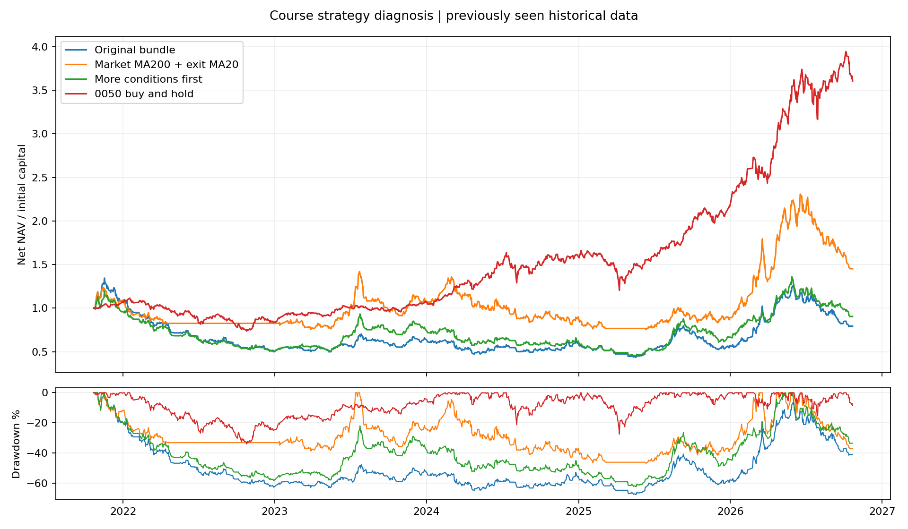

2021-10-25～2026-10-22；日線多方、成本後結果。20 組事前列明的機制比較；所有歷史期間已在先前研究看過。
資料修正：威剛 3260 於 2025-10-01 正式停牌、10-02 恢復，依 櫃買公告及期交所復牌公文補上當天持倉估值，不成交、不補進場訊號。修正前 103 次評估（8 次中止）完整保留；本輪規則未改。原始研究報告與證據雜湊記於 data_amendment。
固定原來交易單位和進出時點，價差毛損益合計 384,361 元；手續費與稅 440,532 元，滑價 150,490 元；最後淨損益 -206,661 元。這是精確成本歸因，不能把毛損益當成另一個零成本複利回測。
持有期間中位數 6.0 個交易日。不同出場原因：
| 出場原因 | 筆數 | 持有日中位數 | 淨損益 |
|---|---|---|---|
| hard_stop | 205 | 2.0 | -2,076,448 |
| hard_stop_gap | 20 | 3.0 | -267,183 |
| previous_close_below_ma | 348 | 9.0 | 2,136,969 |
以下為股票×訊號日，並非實際成交數。最後一欄是只符合該篩選器、移除它就會失去的訊號數。若為 0，代表它在這套聯集中沒有新增候選；不代表它沒有排序或研究價值。突破進場已要求放量，所以第一版量能 10 分對所有合格候選都相同。
| 篩選器 | 合格訊號數 | 獨有訊號數 |
|---|---|---|
| 只用量大動能 | 3544 | 837 |
| 只用投信剛買準突破 | 1601 | 0 |
| 只用投信連買 | 1280 | 0 |
| 只用外資剛買 | 783 | 0 |
| 只用外資投信同買 | 1147 | 121 |
| 只用價量 400 日新高 | 1409 | 205 |
| 只用突破邊緣 | 2248 | 246 |
固定 5 檔、7% 即時停損、隔日開盤估算。兩日確認只影響均線出場，不延後固定停損。大盤均線濾網只控制新買進，沒有事後強制出清。手續費每邊 0.1425%、股票賣出稅 0.3%、滑價每邊 0.1%；100 萬是統一試算本金。
| 變化 | 累積報酬 | 年化 | 最大回撤 | 平倉筆數 | 年周轉 | 相對第一版年化日均差 95% 區間 |
|---|---|---|---|---|---|---|
| 第一版組合 | -20.67% | -4.53% | -67.64% | 573 | 22.4 | 0.00%～0.00% |
| MA10 連續兩日出場 | -25.50% | -5.73% | -69.27% | 508 | 19.9 | -15.93%～15.42% |
| MA20 出場 | 1.95% | 0.39% | -65.55% | 383 | 14.7 | -16.42%～26.88% |
| MA20 連續兩日出場 | 26.26% | 4.78% | -55.76% | 350 | 13.2 | -15.72%～36.57% |
| MA50 出場 | 150.98% | 20.25% | -47.75% | 214 | 7.5 | -3.17%～51.06% |
| 加大盤 MA60 濾網 | -4.78% | -0.98% | -56.29% | 476 | 18.7 | -12.41%～17.59% |
| 加大盤 MA200 濾網 | 12.86% | 2.45% | -48.77% | 472 | 18.8 | -4.86%～19.44% |
| 大盤 MA200 + 個股 MA20 | 45.17% | 7.75% | -46.81% | 306 | 12.2 | -11.08%～36.76% |
| 十日首個進場訊號 | -21.87% | -4.83% | -66.97% | 568 | 22.2 | -13.09%～12.05% |
| 只按動能排序 | -47.33% | -12.06% | -73.74% | 593 | 23.0 | -26.45%～10.39% |
| 先按符合策略數排序 | -9.64% | -2.01% | -62.46% | 576 | 22.6 | -18.10%～21.59% |
| 動能窗口改 60 日 | -59.84% | -16.70% | -70.21% | 589 | 23.2 | -33.83%～3.51% |
| 法人資料延後一日 | -56.32% | -15.29% | -71.12% | 589 | 22.8 | -31.16%～4.11% |
| 只用量大動能 | -23.08% | -5.12% | -67.48% | 569 | 22.3 | -8.22%～7.09% |
| 只用投信剛買準突破 | 29.52% | 5.32% | -47.98% | 486 | 19.2 | -18.46%～35.54% |
| 只用投信連買 | -76.79% | -25.37% | -81.16% | 509 | 20.2 | -49.22%～-3.37% |
| 只用外資剛買 | -23.19% | -5.15% | -60.55% | 415 | 16.2 | -26.15%～20.55% |
| 只用外資投信同買 | -54.98% | -14.78% | -73.19% | 466 | 18.4 | -38.38%～9.41% |
| 只用價量 400 日新高 | 58.39% | 9.65% | -47.90% | 446 | 17.9 | -8.83%～34.40% |
| 只用突破邊緣 | 12.33% | 2.36% | -62.00% | 530 | 20.8 | -23.17%～34.81% |
最後一欄由配對日報酬差的 20 日區塊重抽樣得到，並非 CAGR 差，也未做多重比較校正，不能當成獲利保證或正式顯著性結論。

事前指定第一版與「大盤 MA200 + 個股 MA20」，每邊滑價改 0.3%，不重選參數：
每年以之前所有資料比較 19 組（法人延遲屬敏感度測試，不參與選擇），先要求正年化且至少 20 筆平倉，再以年化 − 0.5×回撤絕對值排序；沒有合格者就留現金。每年獨立本金起算、年末扣估計清算成本。這是已看過資料的時間順序重播。
| 年度 | 前一年底選定 | 當年報酬 | 當年最大回撤 | 狀態 |
|---|---|---|---|---|
| 2023 | 現金 | 0.00% | 0.00% | completed |
| 2024 | MA50 出場 | 34.79% | -22.78% | completed |
| 2025 | MA50 出場 | -18.58% | -33.57% | completed |
| 2026 | MA50 出場 | 58.97% | -29.93% | completed |
串接後研究淨值結果：{'total_return': 0.7445907999374115, 'max_drawdown': -0.3601845576093111}。若任一年遇未知持倉缺價而中止，整段不提供完整績效，亦不偷偷換成別的策略。
每個收盤訊號從隔日開盤持有 5 或 20 個交易日至收盤；扣費、排除 ±3% 外開盤與缺資料／不可交易端點。未使用原策略途中停損或持倉名額，屬訊號診斷，不能與上面的帳戶報酬混用。positive_fraction 是這份歷史樣本的上漲比例，沒有校準成未來機率。相對 0050 欄按訊號日等權，其他報酬欄按股票日等權。
| 持有日 | 組別 | 樣本 | 平均淨報酬 | 歷史正報酬比例 | 相對 0050 平均報酬 |
|---|---|---|---|---|---|
| 5 | all | 4276 | -0.64% | 39.22% | -0.58% |
| 5 | count1 | 1060 | -0.41% | 40.09% | -0.44% |
| 5 | count2 | 1698 | -0.55% | 38.28% | -0.31% |
| 5 | count3 | 825 | -0.80% | 38.42% | -0.53% |
| 5 | count4plus | 693 | -1.00% | 41.13% | -0.82% |
| 5 | M_below70 | 824 | -0.64% | 35.80% | -0.26% |
| 5 | M_70_80 | 660 | -0.50% | 39.55% | -0.37% |
| 5 | M_80_90 | 1324 | -0.58% | 39.88% | -0.45% |
| 5 | M_90plus | 1468 | -0.73% | 40.40% | -0.52% |
| 20 | all | 4222 | 1.36% | 44.74% | -0.85% |
| 20 | count1 | 1046 | 1.39% | 44.65% | -1.35% |
| 20 | count2 | 1675 | 1.23% | 43.76% | -0.20% |
| 20 | count3 | 820 | 2.09% | 47.07% | 0.18% |
| 20 | count4plus | 681 | 0.78% | 44.49% | -1.00% |
| 20 | M_below70 | 820 | 0.69% | 45.73% | -0.68% |
| 20 | M_70_80 | 648 | 1.09% | 43.83% | -1.16% |
| 20 | M_80_90 | 1296 | 1.86% | 43.60% | -0.25% |
| 20 | M_90plus | 1458 | 1.43% | 45.61% | 0.12% |
更完整的原課程轉譯，仍需處理箱型品質、初次發動、漲停家數、公司事件、產業與基本面。這些不是目前可從動能分數自動推導的資訊；不能因新結果較好就宣稱已重現作者。
完整結果與來源雜湊 · 事前固定研究範圍 · 每次成功／中止試驗 · 逐筆成本歸因 · 條件交集 · 後續報酬診斷。所有完成案例附 *-nav.csv 與 *-trades.csv。
研究方法參考 Bailey 等人的 The Probability of Backtest Overfitting：反覆挑參數可能得到歷史假象，因此公開搜尋範圍及全部結果。本報告沒有計算 PBO，也不宣稱區塊重抽樣已消除選擇偏誤。